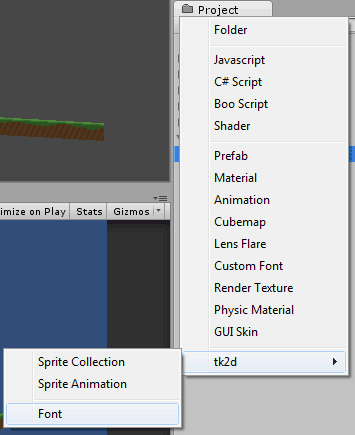
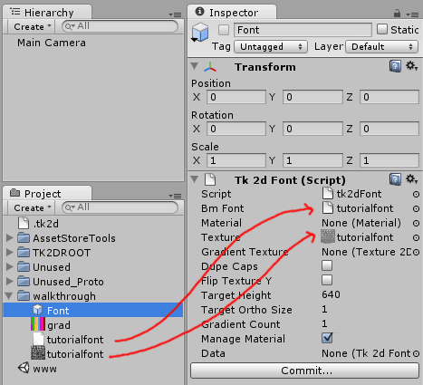
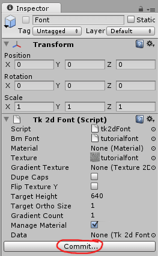

Documentation
Script Reference
Forum
Documentation
Script Reference
Forum
A Font imports a text BMFont exported from the excellent BMFont program . You can also use Hiero on Mac or Windows if you prefer. 2D Toolkit has also been tested with Glyph Designer.
2d Toolkit supports both xml and text font formats. The only limitation is that it only supports a single page of textures. The maximum ASCII character imported is set to 128 by default. You can increase this on the Font object if additional characters are necessary.
2D Toolkit can also import a font directly into a sprite collection. The advantage of doing it this way is that the font will be able to batch with the rest of your sprites. Refer to this document on how to create embedded fonts. "Importing a font into a sprite collection"
For best results, use the following settings:
BMFont - Export options: 32 bit, Channels A - outline, RGB - one (no outline) or glyph (when an outline has been set up).
Hiero - In Gylph Cache, Set page width and height so you end up with 1 page exactly. Increase padding around characters.
Create a Font by clicking on "Create > tk2d > Font" in the Project Window. This is ideally done in the same directory the font was exported to in the previous stage, but doesn't have to be. Rename it to TutorialFont.

Assign the xml / text font and texture to the Font object. *From version 1.51 it is not necessary to create a material. 2D Toolkit will automatically create a material for you if one doesn't exist. *

Click Commit. You can now use this font in TextMeshes within your scene.
